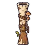

ลานนวดข้าวร้าง
ดูบนแผนที่และวิธีไป วางแผนฟาร์ม
ชั้นล่างในป่ากองไฟ · Lv 10–18
เดินต่อไป
มอนในแมพ (9)
| มอน | Lv | ธาตุ | โซน |
|---|---|---|---|
| 12–18 | ลม | ลานหินโม่ยักษ์ | |
| 10–17 | ดิน | ลานหินโม่ยักษ์ | |
| 10–17 | ดิน | ลานหินโม่ยักษ์ | |
| 10–18 | ดิน | ลานหินโม่ยักษ์ | |
| 12–18 | ลม | ลานหินโม่ยักษ์ | |
| 12–18 | ดิน | ลานหินโม่ยักษ์ | |
| 12–18 | ดิน | ||
| 12–18 | ลม | ลานหินโม่ยักษ์ | |
| 20–20 | มืด |
อุปกรณ์ที่ดรอปในแมพนี้
| ของ | โอกาสสูงสุด |
|---|---|
| 0.5% | |
| 0.25% | |
| 0.25% | |
| 0.25% | |
| 0.25% | |
| 0.25% | |
| 0.25% | |
| 0.25% | |
| 0.25% | |
| 0.25% | |
| 0.25% | |
| 0.25% | |
 ลูกซองท่อนซุง | 0.25% |
| 0.15% | |
| 0.15% |